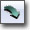
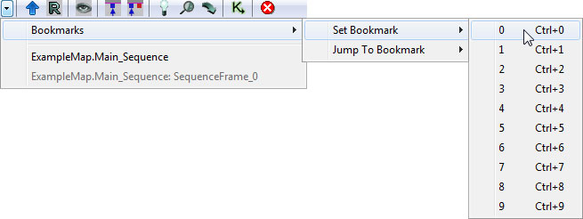

UDN
Search public documentation:
KismetUserGuide
日本語訳
中国翻译
한국어
Interested in the Unreal Engine?
Visit the Unreal Technology site.
Looking for jobs and company info?
Check out the Epic games site.
Questions about support via UDN?
Contact the UDN Staff
中国翻译
한국어
Interested in the Unreal Engine?
Visit the Unreal Technology site.
Looking for jobs and company info?
Check out the Epic games site.
Questions about support via UDN?
Contact the UDN Staff
UE3 Home > Unreal Editor and Tools > Unreal Kismet User Guide
UE3 Home > Kismet Visual Scripting > Unreal Kismet User Guide
UE3 Home > Cinematic Artist > Unreal Kismet User Guide
UE3 Home > Kismet Visual Scripting > Unreal Kismet User Guide
UE3 Home > Cinematic Artist > Unreal Kismet User Guide
Unreal Kismet User Guide
Overview
Opening Kismet
Kismet Interface
Menu Bar
Window
- Properties - Shows the Properties Pane.
- Sequences - Shows the Sequences Pane.
Tool Bar
What follows is a description of each of the toolbar buttons, from left to right as they appear on the toolbar.| Icon | Description |
|---|---|
| Navigate backward in sequence history. | |
| Navigate forward in sequence history. | |
| Show recent sequence history as well as provide access to setting and jumping to [#ViewportBookmarks][viewport bookmarks]]. | |
| Go to parent sequence. | |
| Rename current sequence. | |
| Zoom view to selection. If nothing is selected, will zoom to fit entire sequence. | |
| Hide unused connectors. | |
| Show all connectors. | |
| Creates a new sub-sequence. | |
| Toggle the Kismet Search window. | |
|  | Opens a new instance of the Kismet Update List window. |
| Opens a new Kismet Window. |
Graph Pane
 This pane is the workspace for creating Kismet sequences. It displays all of the actions, conditions, events, variables, and subsequences that belong to the current sequence. New sequence objects are added and connections are made between them here.
This pane is the workspace for creating Kismet sequences. It displays all of the actions, conditions, events, variables, and subsequences that belong to the current sequence. New sequence objects are added and connections are made between them here.
Properties Pane
The Properties pane displays the properties belonging to the currently selected object in the Graph pane allowing them to be modified. If no object is selected, no properties are displayed.Sequences Pane
The Sequences pane shows the hierarchy of all sequences and subsequences in the current level as well ass any streaming levels. Selecting one of the sequences causes that sequence and its contents to be displayed in the Graph pane.Controls
Mouse Controls
Here are the basic mouse controls for operating Kismet:| LMB + Drag on background | Pan sequence around |
| Mouse wheel | Zoom in and out |
| LMB on sequence object | Select object |
| Ctrl + LMB on sequence object | Toggle selection of object |
| Ctrl + drag | Move current selection |
| Ctrl + Alt + LMB + Drag | Box select |
| Ctrl + Alt + Shift + drag | Box select (add to current selection) |
| LMB + Drag on connector | Create connection (release on connector or variable) |
| RMB on background | Bring up New Object menu |
| RMB on object | Bring up Object menu |
| RMB on connector | Bring up Connection menu |
| Alt + LMB on connector | Break all connections to connector |
| Double-click on SubSequence | Open subsequence |
| Double-click on Matinee action | Open Matinee keyframing tool |
| Double-click on Named Variable | Jump to the named variable |
| Double-click on Activate Remote Event action | Jump to the associated Remote Event |
| Double-click on Remote Event | Jump to the associated Activate Remote Event action |
Keyboard Controls
Here are the keyboard controls for Kismet:| Ctrl + C | Copy selected objects |
| Ctrl + V | Paste |
| Ctrl + X | Cut selected objects |
| Ctrl + W | Duplicate selected objects |
| Delete | Delete selected objects |
| Backspace | Go up to parent sequence |
| Ctrl + Z | Undo |
| Ctrl + Y | Redo |
| C | Create comment box around selection |
| A | Zoom to selection/entire sequence |
| Ctrl + Tab | Jump to previous sequence |
| R + LMB | Create a RemoteEvent/ActivateRemoteEvent pair |
| PageUp | Bring selected object to front |
| PageDown | Send selected object to back |
Hotkeys
These are some shortcuts for adding specific types of actions, events, conditions, or variables quickly:| B + LMB | Adds a Boolean variable |
| Ctrl + B + LMB | Adds a Compare Bool condition |
| D + LMB | Adds a Delay action |
| E + LMB | adds an External variable |
| F + LMB | Adds a Float variable |
| G + LMB | Adds a Gate action |
| I + LMB | Adds an Integer variable |
| Ctrl + I + LMB | Adds a Compare Int condition |
| F + LMB | Adds a Float variable |
| Ctrl + F + LMB | Adds a Compare Float condition |
| L + LMB | Adds a Log action |
| M + LMB | Adds a Matinee sequence |
| N + LMB | Adds a Named variable |
| O + LMB | Adds an Object variable |
| P + LMB | Adds a Player variable |
| Q + LMB | Creates a new SubSequence with a specified name |
| R + LMB | Adds a Remote Event with a specified name |
| S + LMB | Adds a Play Sound action |
| Ctrl + S + LMB | Level Startup event |
| T + LMB | Adds a Toggle action |
| X + LMB | Adds an Int Counter condition |
| [ + LMB | Adds a Sequence Activated event |
| ] + LMB | Adds a Finish Sequence event |
Working with Sequences
Types Of Sequence Object
There are 4 categories of Object you will place to make up your Sequence| Event | These are objects which create an `input' to your sequence, possibly from an Actor in the game. They are denoted by a red diamond. | |
| Action | These are objects which perform some action on the Actors in your level. Denoted by a box with inputs on the left, outputs on the right and variable connections on the bottom. | |
| Condition | These do not actually affect the level, but the control flow of your sequence. | |
| Variable | These objects simply store information of a particular type for use by an Event, Action or Condition. They are denoted as a colored circle. |
| Red | Bool (true or false) |
| Blue | Float number (e.g. 1.54) |
| Cyan | Integer number (e.g. 3) |
| Green | String (e.g. "Foo") |
| Gold | Vector (e.g. (0.5, 2.75, 5.5) ) |
| Purple | Object reference (e.g. an Actor in the level), Object List, Object Volume, or Player |
| Orange | Matinee Data |
| Black | Unlinked External or Named variable |
Basic Example
Here is a small example of the kind of sequence you may put together in Kismet: In this case, when a player touches Trigger1 in the level, it will turn on PointLight_0. Black lines in Kismet represent `flow of operation'. Following the arrows will show you the order in which actions will happen. The colored lines are simply connections between variables and an object.Creating Events
Different Actors in the level will support generating different events. For example, a Trigger actor supports a Touch an Untouch event. To create a new Event in your Kismet sequence, select the Actor(s) you wish to create the event for in the main UnrealEd viewports and right click in Kismet to bring up the New Object menu. If the Actor(s) belong to the same level as the Kismet sequence, there will be a submenu called `Create Event Using ...' giving the name of the Actor you selected. That submenu will contain all the Event types that the Actor supports. Choose the event type you want and the new Event will appear. If the Actor has a sprite associated with it, it will draw it in the middle of the diamond. If you select more than one Actor in the level and choose `Create Event Using..' it will create one Event for each Actor. Also, if you double-click on an Event, it will jump the UnrealEd camera to that Actor.Dynamic Binding Events
Sometimes the object that you want to have trigger an event is not present when editing the level in the editor. An example of this might be a creature spawned in-game. To solve this problem, you can `attach' an event to an object in a variable at runtime. Look at the example below: When the Actor Factory is executed, it creates a new actor and places it in the object variable (currently empty). It then calls the AttachToEvent action, to attach the Death event to the contents of the variable. Then, whenever the actor dies, that event will be fired. Note that this Event is not associated with any Actor when authoring the sequence in the editor.Creating Variables
When you make a new variable using the New Variable submenu, it will start off with the default value (usually 0 or empty). You can change its value by simply editing its properties. A quick way to create a new variable of the correct type and attach it to an existing variable connector is to right-click on the connector and choose `Create new ... variable'. You can also create Object variables containing a reference to an Actor in your level in the same way as creating Events. Simply select the Actor or Actors you wish to create variables for and choose `New Object Var Using...'. To assign an Actor reference to an existing Object variable, select the Actor, right click on the variable and choose `Assign .. to object variable(s)'. Double-clicking on an Object variable containing a reference to an Actor will jump the UnrealEd camera to that actor in the level in the same way as Events.Object Comments
Most Sequence Objects have an ObjComment property. Any text you enter in there is shown above that object in blue text (see item 18 in the picture below). This lets you explain what this object is for, and can make understanding complex sequences or sequences written by other people much easier. See also the `Comment Boxes' section later in this document.SubSequences
One powerful feature of UnrealKismet is the ability to create `sub-sequence' objects containing their own sets of sequence objects. In this way you can build a complex hierarchy of sub-sequences. You can use the Sequence Explorer Window (item 14 in the picture earlier) to see the current hierarchy and move around it. Each subsequence remembers its last view position and zoom. To create a subsequence, simply select the objects you wish to place into the subsequence and choose `Create new sequence' from the New Object context menu. You will be prompted to enter a name for the new sequence. The selected objects will then be replaced by a single subsequence object. You can tell subsequence objects from regular objects by their blue title bar. You can also create input, output and variable connectors for your subsequences. To create a input, add a `SequenceActivated' event to your subsequence. To create an output, add a `Finish Sequence' action. To create a variable connector, add an `External Variable'. When you first place an External Variable, it will have a black outline, and the variable connector will be black. This is because the type has not been defined. To set the type, simply connect the External Variable to something, and it will take on that type and change color accordingly. You can change the connector name shown by the sequence in its parent by changing the InputLabel, OutputLabel and VariableLabel parameters. Here is an example subsequence: And here is what it appears as in the parent sequence: You can rename a subsequence at any time by right-clicking on it and choosing `Rename selected sequence', or while you are inside the sequence pressing the `Rename current sequence' button (item 2 on the picture earlier).Import/Exporting SubSequences
Sometimes once you have a useful subsequence, you may want to use it in multiple levels, or share it with other level designers. To do this, it is possible to export a sequence to a package in the same way as a texture or mesh. To export, right click on your sequence and choose `Export sequence to package'. You will then be prompted for a Package, Group and Name to put a copy of this sequence. You should then be able to see your new Sequence in the Content Browser (you can filter for Sequences using the filter): To import, find the sequence you want in the Browser and select it. Then in Kismet right click on the background and choose `Import sequence...'. When you import a sequence from a package it makes a complete copy into your sequence, so you can feel free to modify it after that. Note that when you export a sequence, all references to Actors in the level in that sequence are emptied. For this reason, you usually want to add connectors to your subsequence so you can treat it as a `black box' and to make it easy to hook up.Named Variables
One problem you can run into with a complicated sequence is that you need to reference one variable from many places, at many points in the Sequence hierarchy. Though you can solve this problem using chains of External Variables, `Named Variables' provide another, simpler way. To use a Named Variable, first you have to give a name to an existing variable. Enter the name in the VarName field in its properties. When you do this, you will see its name in red underneath: It is now possible to access this variable from anywhere in your sequence by using a Named Variable. To do this, add a new Named Variable using the New Object menu. Initially it will look like this: The black border means that it has no type - this is established when you first connect it to something in the same way as External Variables. The `< ??? >' in the middle means you have not yet given it a variable name to look for. To give it a name, you just enter it as the FindVarName property of the Named Variable. If we then connect it to and Int variable connector, and assuming an Int with that name is present anywhere in the levels sequence hierarchy, it should look like: The tick inside the Named Variable indicates if it is having any problems. If you see a cross it could mean one of the following:- Named Variable has no FindVarName.
- Named Variable has no type (has not been connected to anything).
- No variable could be found corresponding to FindVarName.
- The variable corresponding to FindVarName is of the wrong type.
- There is more than one variable corresponding to FindVarName.
Kismet Search
The Kismet Search window allows you to find Sequence Objects anywhere in the levels sequences. The Search Type combo box allows you to select what you are searching for:| Comments/Names | This will search for the entered string within the comment or name of any object. |
| Referenced Object Name | This will look for an exact match between the entered string and the name of a referenced object (e.g. Actor in the level). |
| Named Variable | Look for a variable whose VarName exactly matches the entered name. |
| Named Variable Use | Look for all Named Variables whose FindVarName exactly matches the entered name. |
Tips And Tricks
Comment Boxes
Comment boxes are very useful for graphically grouping and annotating groups of objects. To create a comment box, select what you want to group and choose `New Comment' from the New Object context menu (or you can just press the `C' key). If nothing is selected when you create the comment it just creates some standalone blue text. Here is an example of a sequence using comment boxes: You can resize a placed comment box by selecting it and using the black triangle in the bottom-right corner. You can also change the border and fill color, border width, and even assign a texture or material to the box background. Comment boxes make understanding the sequence much easier and their uses is highly recommended!Cut/Copy/Paste
Kismet supports copy and paste of selections of Objects and SubSequences. It uses text export via the windows clipboard, so you can paste the objects into Notepad etc. for exchanging or debugging scripts. Note that when you right-click on the Kismet background there is a `Paste Here' menu option that allows you to paste the clipboard contents at the mouse position. Note also that when Kismet elements are pasted across the sequences of other levels, references to objects in the old level will be automatically cleared with no warning.Copy/Paste Connections
If you right click on a black logic connector, you can choose to 'Copy Connections'. You can then right-click on another connector and paste the connections to the new location. This makes it much easies to re-route several lines from one action to another.Zoom To Fit
If you select a set of Objects and press the `Zoom To Fit' button on the toolbar (item 3 in the pic earlier) or press the `A' key, it will adjust the view position and zoom to encompass the selection. If nothing is selected, it will adjust the view to encompass the whole sequence. This can be useful if you `lose' yourself in an empty area.Viewport Bookmarks
Viewport bookmarks in Kismet work similar to how they work in the main level editor. The location and zoom level of the Graph pane can be saved to bookmarks that allow you to easily and quickly jump to specific locations. To Set a Bookmark- Navigate to the desired location and zoom level in the Graph pane.
- Click the button in the Kismet toolbar and select the desired bookmark from the list under Bookmarks > Set Bookmark.

Alternatively, you can use the keyboard shortcut (Ctrl + [0-9]) to set the desired bookmark. - The bookmark has been set and now appears in the Bookmarks > Jump to Bookmark menu.
- From wherever you are working in Kismet, click the button in the Kismet toolbar and select the desired bookmark from the list under Bookmarks > Jump To Bookmark.
- The Graph pane will reposition and zoom in or out to display the saved bookmark.